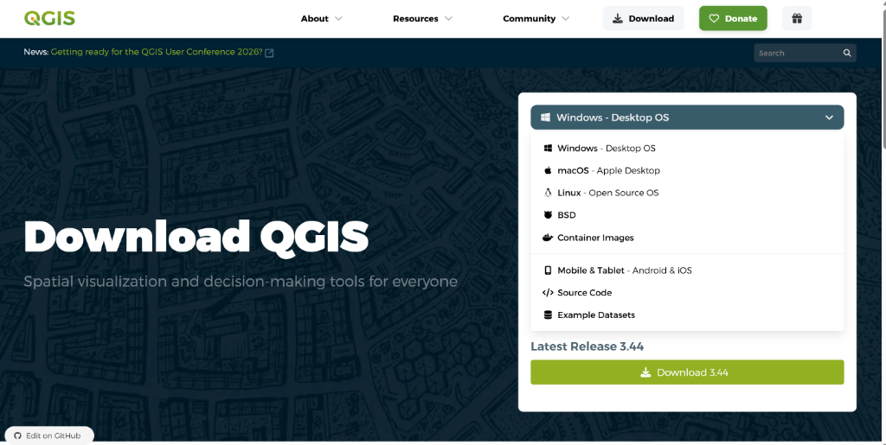
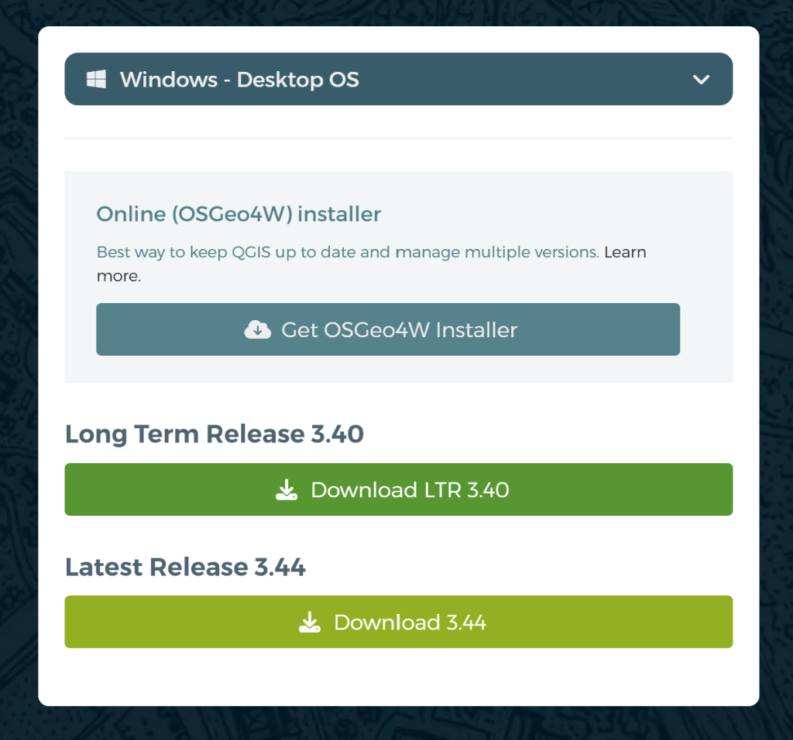
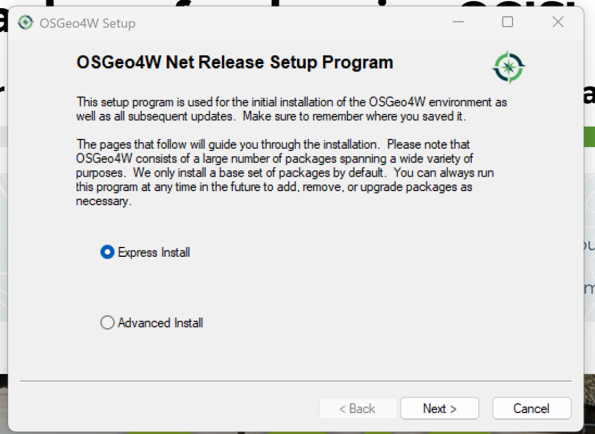
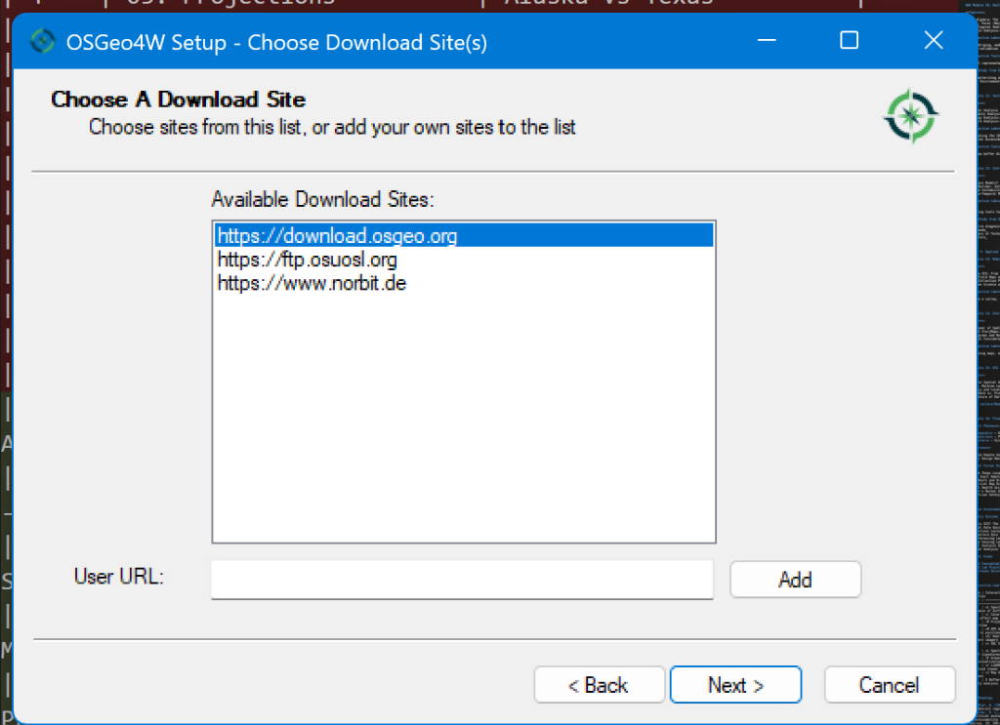
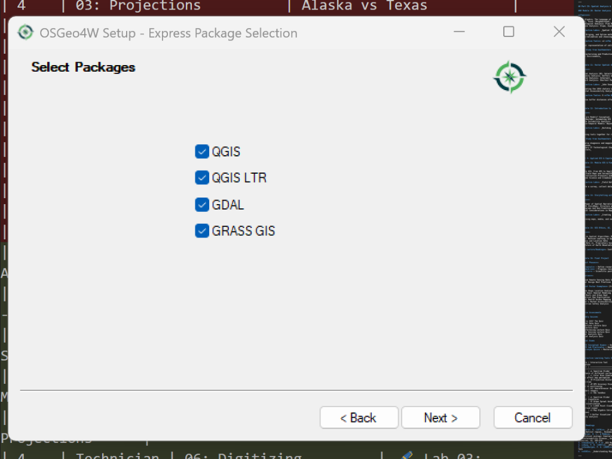
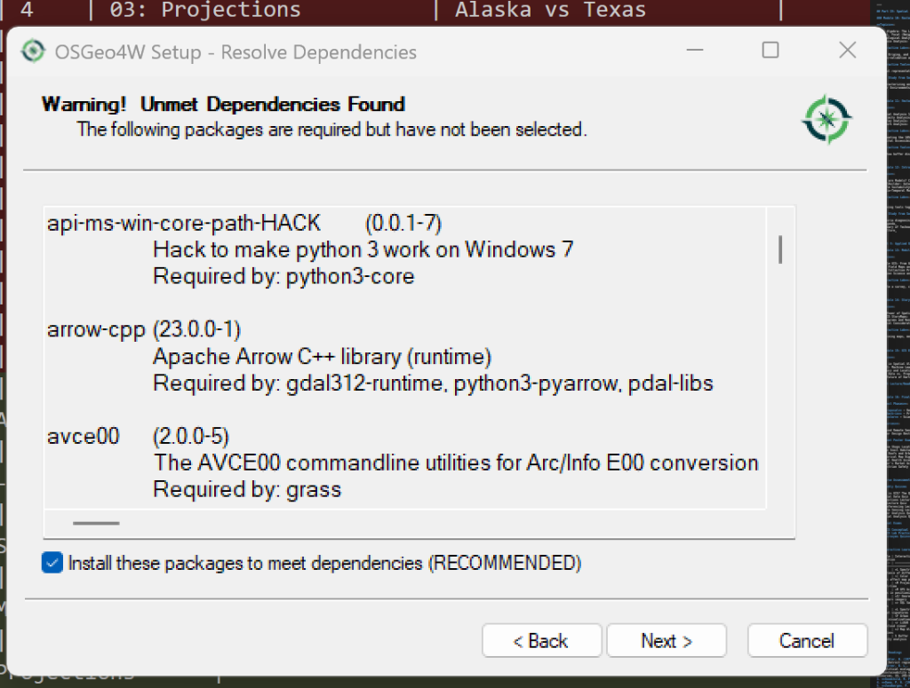
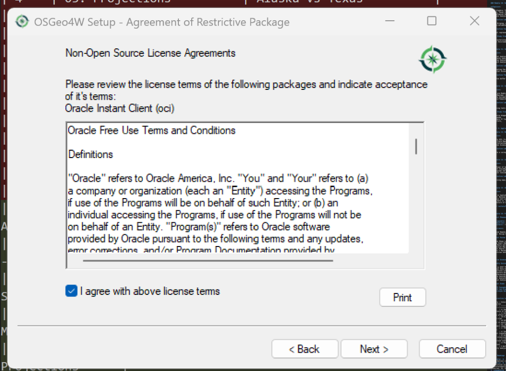
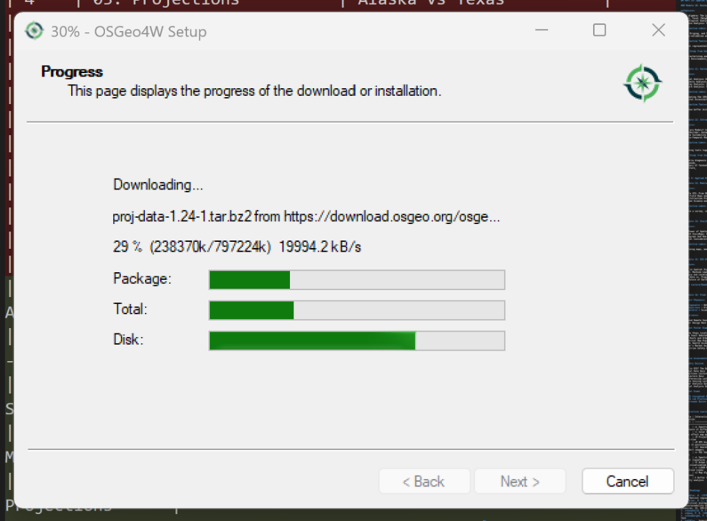
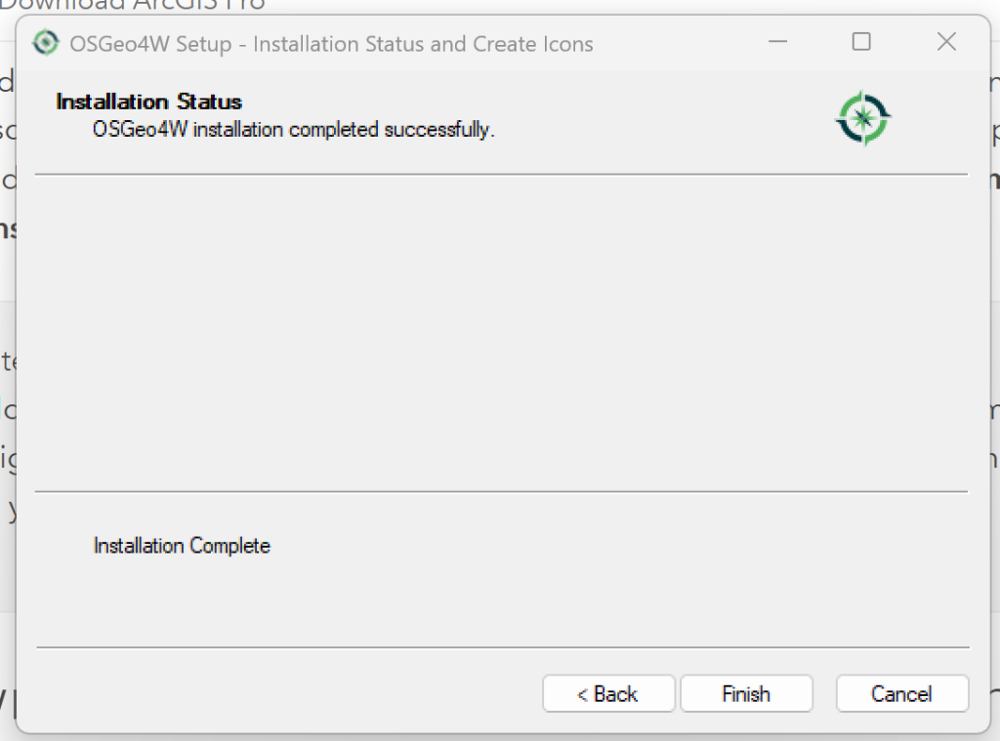
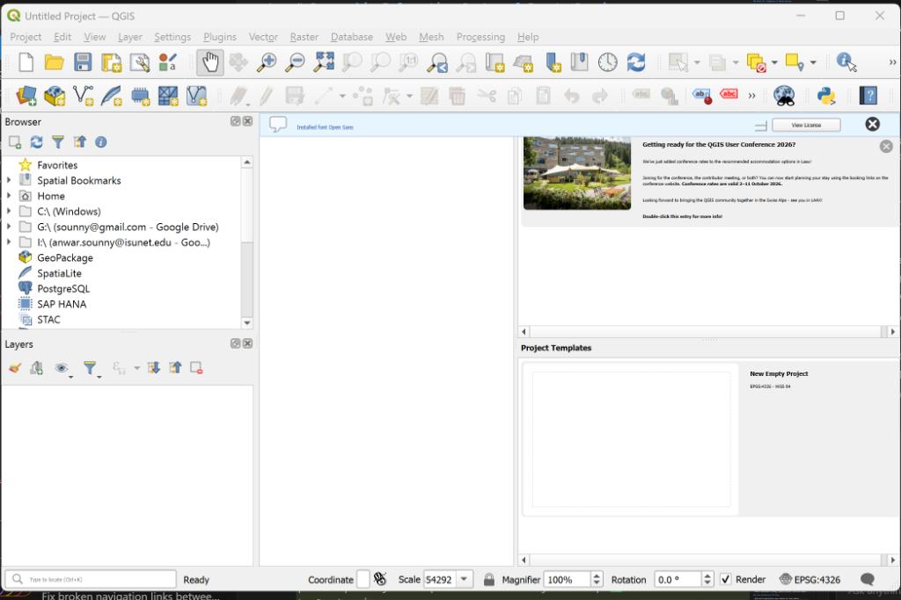

🎯 Learning Objectives
- Verify access to a professional or open-source GIS platform.
- Navigate the initial installation or login process for your chosen tool.
- Demonstrate a working environment by capturing a "Hello World" screenshot.
📂 Background
GIS is not a single piece of software; it is a system. Throughout this course, you may encounter different tools. You only need to set up ONE of the following platforms to complete the core labs, although we encourage you to explore them all.
- ArcGIS Pro: Choose this if you are a university student with a provided license. It is the industry standard for corporate and government jobs.
- QGIS: Choose this if you are a hobbyist, Mac/Linux user, or advocate for open-source. It is free, powerful, and runs on any computer.
- ArcGIS Online: Choose this if you cannot install software on your computer (e.g., Chromebook users). It runs entirely in your web browser.
🛠️ Step-by-Step Instructions
Select your preferred GIS platform to view set up instructions:
Check System Requirements
ArcGIS Pro is a heavy 3D application. It requires a modern Windows PC. Mac users must use Parallels or Boot Camp.
Download & Install
Log in to your university's software portal (e.g., MyESRI or Canvas) to download the ArcGIS Pro installer. Run the installer and accept all defaults.
Sign In with Organization
When you first open Pro, it will ask you to Sign In. Do NOT create a public account here.
- Click "Your ArcGIS Organization's URL".
- Type your university prefix (e.g.,
utexas,southwestern). - This will redirect you to your campus login page (SSO). Log in with your school ID.
Create a Project
Once logged in, click "Map" under the "New Project" templates. Name it Lab00_Setup.
You should see a map of the world. Verify your name appears in the top-right corner.
Navigate to QGIS.org
Open your web browser and go to the official website: https://qgis.org/.

Click the large "Download Now" button on the main page.
Select Your Operating System
The website will usually detect your system, but you can manually select:
- 🪟 Windows: Click "Get OSGeo4W Installer" (Online Installer). This is the best way to manage multiple versions.

- 🍎 macOS: Download the official "QGIS macOS Installer" (.dmg).
- 🐧 Linux: Follow the specific command-line instructions for your distro.
Tip: You will see two versions usually. The "Long Term Release" (LTR) is most stable, while the "Latest Release" has the newest features. For this class, either works!
Install & Launch
Run the installer you downloaded. It is large (~1GB), so it may take a few minutes.

- Select "Express Install". This will automatically install QGIS and its dependencies.
- When asked to "Choose A Download Site", select any URL from the list (e.g.,
download.osgeo.org) and click Next.
- Select Packages: Ensure ALL checkboxes are selected.

- If prompted with "Unmet Dependencies Found", ensure the "Install these packages..." box is checked and click Next.

- Finally, Agree to any license terms (e.g., "Non-Open Source License Agreements") to begin the installation.

- Wait for Completion: The installer will now download and install the packages. Watch the progress bars! ☕ This is a good time to grab a coffee.

- When the status says "Installation Complete", click Finish.

What am I installing?
- QGIS: The "Latest Release" with the newest features.
- QGIS LTR: The "Long Term Release" (most stable version).
- GDAL: The "Geospatial Data Abstraction Library" – the heavy-lifting engine that reads/writes data formats.
- GRASS GIS: A powerful analytical engine for complex geoprocessing tasks.
🍏 Mac Users: If you see a security warning ("Unidentified Developer"), Right-Click the app icon and select "Open" to bypass it.
🚀 Launching QGIS: Open your Start Menu (Windows) or Applications (Mac) and search for "QGIS Desktop". Click it to launch the program.
Success: The Blank Canvas
When QGIS opens, you will see a large empty white space (the "Canvas") surrounded by toolbars. This means you have successfully installed the software.

🎉 You are now ready for Lab 01!
Go to ArcGIS Online
Navigate to www.arcgis.com.
Create Account or Sign In
Students: Click "Sign In", select "Your ArcGIS Organization's URL", and use your school credentials.
Public/Hobbyist: Click "Create an account" (bottom of page) → "Create a Public Account". You can use Google/Facebook or an email.
Open Map Viewer
Once logged in, click "Map" in the top navigation bar. Select "Open in Map Viewer".
You should see a base map of the world. Ensure your profile icon appears in the top right.
✅ Submission & Assessment
To pass this first lab, submit a single image file (JPG or PNG) to your instructor (or save it for your records).
The Screenshot Must Include:
- The software interface openly running.
- A visible map (basemap is fine).
- For ArcGIS Users: Your logged-in username in the corner.